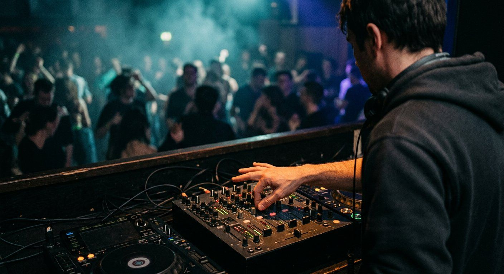

Learn to DJ in order: a six-week path that actually sticks
Most people learn DJing in the wrong order: they buy gear, learn one transition, then spend a year wondering why their mixes sound like two songs played at each other. This is the order that works, with the drills, the milestones, and an honest note on how long each stage takes.

What you are actually learning
DJing is four skills stacked on top of each other, and they fail in a predictable order. If the tracks are not matched in tempo, no amount of EQ will save the blend. If the phrasing is wrong, a technically perfect mix still lands like a mistake. And if you have never recorded yourself, you will keep making the same error because you never hear it back.
So the path below is sequential on purpose. Each stage has a drill, a milestone you can measure, and a guide that goes deeper. Skip ahead if a stage is already solid — most people arrive with one of them half-finished.
- Stage 1, the setup: two things that play at once, with cueing that lets you hear the next track privately.
- Stage 2, tempo: the two tracks hold the same speed without you touching anything.
- Stage 3, phase and phrasing: the beats line up, and the entry lands on a bar line rather than mid-phrase.
- Stage 4, performance: you can do it for an hour, in front of people, with requests interrupting you.
The path
Five stages, in the order a new DJ usually benefits from them. Each card links to the guide that covers it in detail.
Get a setup that works
Two channels, working headphones, a cue mix you can actually hear, and speakers pointing at you rather than the room. Boring, and the reason most early sessions go badly.
Open →Step 2 · weeks 2–3Mix two tracks
Counting phrases, finding a mixable intro, and the order of operations for a blend that does not fall apart halfway through.
Open →Step 3 · weeks 3–5Beatmatch by ear
Tempo first, then phase, then hold it. The four-week drill plan in this guide is the most useful thing on the site, and the browser trainer lets you rehearse the same drill without a controller.
Open →Step 4 · week 4 onwardRecord everything
Every practice session, from the first week. Listening back without watching the screen is how you find the drift you cannot hear while mixing.
Open →Step 5 · week 6Put a mix out
One finished 30-minute mix, published where people can find it, sent to three people who might book you. A mix nobody hears teaches you nothing new.
Open →The six-week plan
Three sessions a week, 45 minutes each. That is under seven hours in total, and it is enough to get through the whole path once — slowly, with something measurable each week. Check off milestones as you achieve them; your progress is saved on your device.
Your Practice Milestone Tracker
0 of 6 Weeks Completed (0%)Drop the second track on a bar line, on purpose, 3 times in a row without looking at waveforms.
Week 1 Guide →Two copies of one track locked for 32 bars using pitch fader only, no sync.
Launch Trainer Drill →Recover a half-beat misaligned entry within one bar using small jog taps.
Beatmatching Steps →Blend different tracks for 16 bars and record 3 successful transitions in a row.
Mixing Fundamentals →Perform transparent bass swaps without low-end phase cancellation or vocal clashes.
Harmonic Wheel Below ↓Record a continuous 30-minute set in one single take and publish it.
Recording Guide →If beatmatching is the part that keeps collapsing, run the drill in our browser trainer between sessions — it isolates tempo from phase and scores both, so you stop guessing which one is broken.
Timings are a suggestion, not a claim about how fast anyone learns. Some people will need three weeks on stage 2; some will skip it because they already play an instrument. The milestone matters, not the calendar.
Harmonic mixing: how keys fit together
Once beatmatching and phrasing are reliable, harmonic key matching is what makes a DJ set sound like a cohesive musical journey rather than random songs colliding. The Camelot wheel translates musical keys into simple numbers (1A–12A for minor, 1B–12B for major).
Where to go deeper
If a step is not where you want to go next, use this table to jump to the guide for the goal you are actually chasing.
| Goal | Related guide | Why it fits |
|---|---|---|
| long-term path | How to become a DJ | The wider picture of how a DJ path develops over time, beyond any single skill. |
| structured learning | Learn DJing | A structured walkthrough for readers who want a continuous step-by-step frame. |
| publishing | Create DJ mixes for YouTube | Practical steps for turning your recorded mixes into published videos. |
| first events | DJ at a wedding | What to prepare and confirm before playing at a first event like a wedding. |
| courses overview | Online DJ courses | Compare online DJ courses and their teaching formats. |
| skills hub | DJ skills hub | The parent hub that connects all of the DJ skills guides on this site. |
Three plateaus, and what breaks them
None of the three need new gear. That is the recurring theme of this site and it will keep recurring: the upgrade you want is usually a drill you have not done yet.
Practice is where the skill lives
Reading a step and being able to do it are different things, and beatmatching is the clearest example: nobody has ever learned it from a table. Our trainer puts the two loops in front of you — a pitch fader, a jog nudge, and a 45-second score — so you can rehearse the tempo-and-phase part of a blend without disturbing anyone or wearing out a record.
Practice room
The beatmatching drill
Two synthesised decks, one slightly out of tempo. Match the tempo, fix the phase, hold the lock. It runs in the browser with no account and no controller, and the readouts can be hidden once you want to trust your ears.
Open the trainerWhen you want the drill structured instead of free-form, the beatmatching guide sets out four weeks of focused sessions — pitch only, then phase only, then mixed material.
Frequently Asked Questions
Is this a course?
No, and it will not pretend to be one. It is an order to work through: five stages, a six-week drill plan, and links to the guides that explain each technique in detail. There is no account, no schedule and nothing to sign up for.
Do I have to follow the stages in order?
Follow the order if you are starting from nothing, because the stages build on each other — you cannot fix phrasing while the tempo is still wrong. If you already know which stage is your weak one, start there. The plan exists so you have a default, not a rule.
How long does it take to get good enough to play out?
Most people who practise deliberately three times a week can hold a clean 30-minute mix together in six to ten weeks. Being ready for a room takes longer, and mostly consists of preparation rather than technique: knowing your tracks, having cues set, and being able to recover when a request lands mid-blend.
Do I need expensive gear to follow this?
No. Any two-channel controller with working cueing will do, and the free tiers of rekordbox, Serato DJ Lite or djay are enough for the first weeks. Our rig planner prices a complete first setup, including the headphones and cables people forget.
Where does getting gigs fit in?
At the end, and only after you have something to show. A published 30-minute mix is the practical first step for most new DJs, followed by playing to friends, then to strangers. The promote-a-mix guide covers the publishing side and the gigs guide covers approaching venues.
What if I only want to learn to beatmatch?
Then skip to stage three. Read the beatmatching guide, run the six drills in the browser trainer, and come back to the rest when the tempo and phase are reliable. That is a legitimate way to use this page.